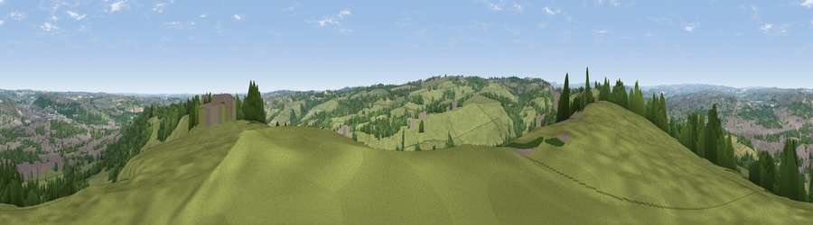

Viewpoint near Thornhill
#11302 in England · top 11% of its area beats it · near Thornhill · access?Where it is
The exact computed spot (SE 23575 18525). Click the marker for map links.
Public access: no public right of way or access land is recorded at this exact spot — it may be on private land. Computed from Natural England's CRoW access layer and OpenStreetMap rights of way — not the legal definitive map. Always verify locally.
The view, rendered

A 360° render of this exact spot computed from the terrain model, tree cover and land cover — summer colours, afternoon light, calibrated against photographs of famous viewpoints. Real trees, hedges and buildings will differ in detail.
The panorama
Grey silhouette: terrain skyline in each direction (720 bearings, Earth curvature and refraction included). Dashed green: skyline with trees (+15 m) and buildings (+8 m) as obstacles. Blue strip: how far the ground is visible on each bearing.
Where the view opens
Wedge length = distance to the farthest visible ground on that bearing (vegetation-aware). Rings at 10, 25 and 50 km.
What fills the view
56% grassland · 25% woodland · 14% built-up · 5% cropland
Angular shares of the visible panorama (visual magnitude), not map area. Landscape diversity 0.48 (0–1 Shannon).
Key numbers
More beautiful places nearby
The staircase of upgrades: each row has a higher view potential than everything closer. Driving times are estimates from straight-line distance, calibrated against real road routing — check an actual route before setting out.
| Place | Direction | Drive | Score |
|---|---|---|---|
| Viewpoint near Grange Moor | SSW · 3 km | ~7 min | 69.8 |
| Castle Hill | WSW · 9 km | ~18 min | 70.2 |
| Viewpoint near Jackson Bridge | SSW · 13 km | ~23 min | 73.5 |
| Viewpoint near Wharncliffe Side | SSE · 23 km | ~38 min | 75.0 |
| Viewpoint near Wharncliffe Side | SSE · 23 km | ~39 min | 75.2 |
| Viewpoint near Otley | N · 26 km | ~42 min | 77.5 |
| Darwen Hill | W · 56 km | ~77 min | 80.7 |
| White Brow | W · 58 km | ~80 min | 82.9 |
53.66268, -1.64471 · source: screening · position refined by local search. Computed location — check access rights before visiting.